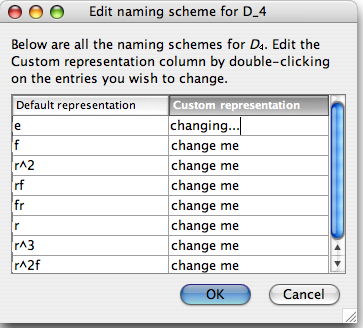

Under the "Naming schemes" section of a group info window, you will find a link that says "Click here to add a new representation for this group." You may also find links that say "Click here to edit this representation." (Note that "naming scheme" and "representation" are interchangeable terms.) In both cases, if you click the link, a window like the following one appears, allowing you to custom-define a naming scheme for the elements of the group.

The left column lists the default element names, and you can double-click entries in the right column and type any (plain) text you like. As you can see in the window above, the user is typing the word "changing..." in the top right cell of the table. When you are done, if you choose OK, your changes will be committed and you will have defined a new representation (or changed an old representation) of the elements of the group.
Any changes you make to naming schemes for a group (adding, deleting, editing) can be undone using the Undo button on the top of the group info window. These changes are stored in your Group Explorer configuration file. If you click the Cancel button in the window pictured above (as opposed to OK), no changes that you made take effect.
button on the top of the group info window. These changes are stored in your Group Explorer configuration file. If you click the Cancel button in the window pictured above (as opposed to OK), no changes that you made take effect.
Links in the group info window to edit representations are only present for representations that you have created. Naming schemes included in a group's group info window by virtue of the fact that the group file author embedded them in the file defining the group are uneditable by you, the end user. (You may, of course, find the group file in question on disk and change it, but don't do that.)
Quick help links:
Contents | Getting Started | Tutorials | User Manual | Miscellaneous Reference
GE terminology | Help on help